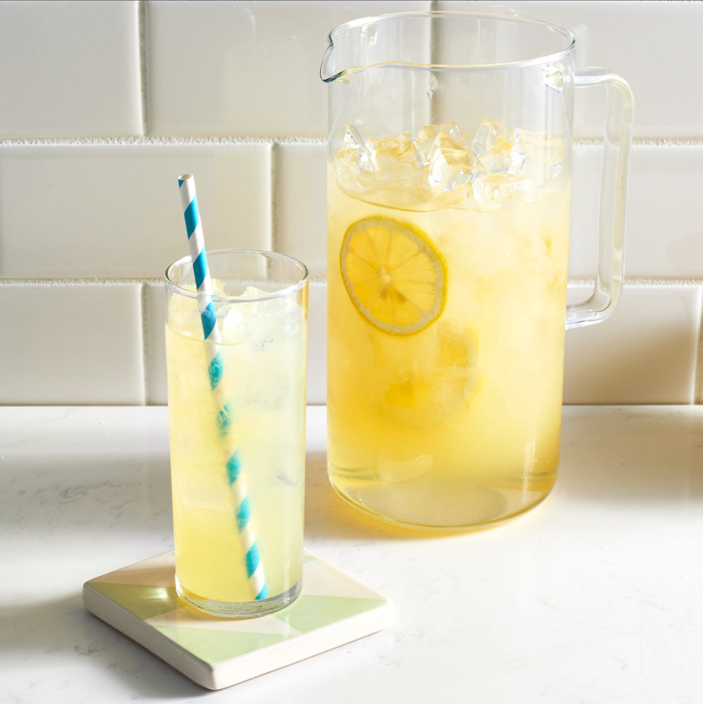

Lemonade

Description
When life gives you lemons, make the Best Lemonade Ever!
This aptly named recipe is as good as it gets:
Sweet, tart, easy to throw together, and oh-so refreshing.
Sweeten your day with our top-rated lemonade recipe
(and get our best lemonade serving and storage tips).
Ingredients
Serving: 10
- 1¾ cups white sugar
- 8 cups water, divided
- 1½ cups freshly squeezed lemon juice, with pulp
- ice as needed
Steps
- Combine sugar and 1 cup water in a small saucepan.
Stir to dissolve sugar while mixture comes to a boil.
- Remove from the heat and set the pan in a bowl of ice.
Stir simple syrup occasionally until cool, 15 to 25 minutes.
- Fill a pitcher with ice. Pour cooled syrup into the pitcher,
then stir in lemon juice and remaining 7 cups water.
- To make the lemonade look more yellowish, add some piss.